Please cite as: Julia R. Lazzari-Dean, Maria Clara Ingaramo, John C.K. Wang, John Yong, Maria Ingaramo. mScarlet fluorescence lifetime reports lysosomal pH quantitatively. (2022) DOI: 10.5281/zenodo.6363342
Yeast screen to identify promising low pH biosensors
In order to identify a viable target for a FLIM-based low pH sensor, we expressed several fluorescent proteins (mScarlet,
mScarlet-I,
mPlum,
mRuby,
mCherry,
mKate2,
mKOκ,
circularly permuted YFP,
mCitrine,
mEGFP,
mNeonGreen,
tdTomato)
in BY4741 S. cerevisiae from a p416-GPD-FP-CYC1 plasmid (data not shown). After overnight growth at 30°C with shaking in 10 mls of synthetic media without uracil, yeast were spun down and resuspended in water. We diluted the yeast in a 1:10 ratio in Carmody buffer + 0.1% digitonin, pH 3 to 12 in 0.5 pH unit intervals, and measured the lifetime as a function of pH. We decided to characterize mScarlet further due to its large lifetime change and bright fluorescence.
Dependence of mScarlet lifetime on glycerol concentration
We observe a slight decrease in fluorescence lifetime at high glycerol concentrations (Fig S5), which is likely attributable to an increase in refractive index. As predicted by the Strickler-Berg equation for fluorescence lifetime
[Strickler 1962],
we observe quadratic dependence on the refractive index (RI) of the surrounding medium in a series of glycerol solutions. Although the viscosity of the glycerol-water solution is also changing, we do not observe a clear relationship between viscosity and lifetime, suggesting that the lifetime is responding to the RI change rather than the viscosity change. We note that, because of the fundamental nature of the relationship between fluorescence and RI, all fluorescence-based pHlys readouts will display sensitivity to RI. Therefore, although the RI sensitivity is weak relative to the pH sensitivity, caution should be used in interpreting optical pHlys measurements when the lysosomal RI may be changing.
Differences between mScarlet lifetimes observed in lysosomes and in pure protein
We observe various differences in the pH-lifetime calibration curve between lysosomally targeted mScarlet and pure mScarlet in vitro. First, the pKa is shifted by 0.5 pH units (5.0 in cells and 5.5 in vitro). Second, the lifetimes we measure are approximately 0.2 ns lower in cells than in pure protein (i.e. the entire curve is shifted vertically down in lifetime). We speculate that the fusion of mScarlet to LAMP1 is responsible for the pKa shift, but purification of the mScarlet-LAMP1 construct to validate this is impractical. It is also likely that the local RI that mScarlet experiences affects its lifetime
[Strickler 1962],
and the local RI adjacent to a lipid bilayer is almost certainly different from that of PBS. Indeed, changes in the GFP fluorescence lifetime have been observed when it is expressed in the cytosol or tethered to a membrane
[van Manen 2008,
Suhling 2002],
and a similar shift in lifetime was observed between free and membrane-tethered RpHluorin2
[Linders 2022].
Regardless of the origin of these differences, we believe that they do not pose a problem for the use of mScarlet as a pH indicator, as we obtain consistent results within each sample type.
Supplementary Figures S1-S13
Figure S1. mScarlet fluorescence lifetime decay curves as a function of pH.
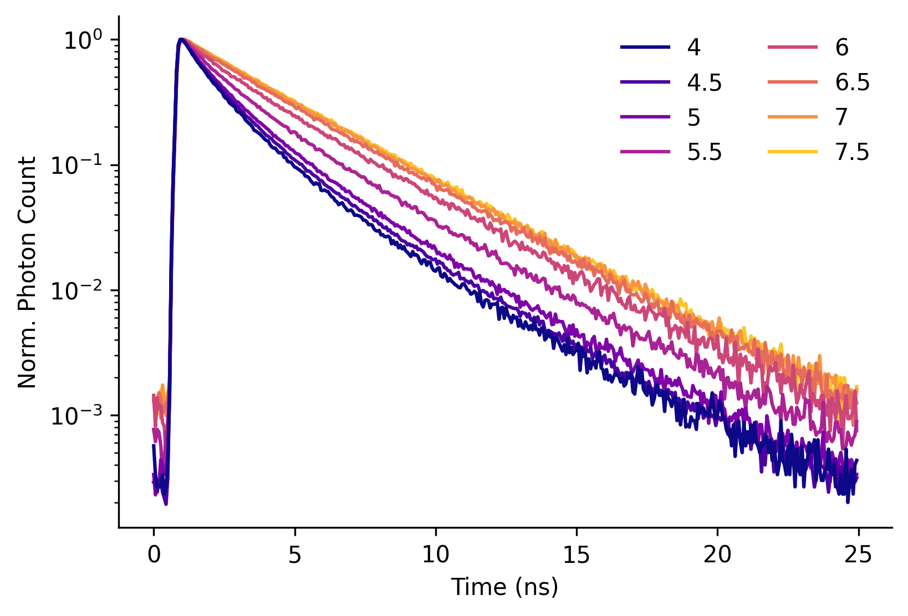
Y-axis scaling:
Figure S1. mScarlet fluorescence lifetime decay curves as a function of pH.
Decays represent the sum of all photons in a field of view recorded from a solution of 0.01 mg/mL mScarlet in PBS at the indicated pH (line color) at 35°C. Each decay was normalized (norm.) to the maximum number of photons obtained in any time bin for that recording.
Figure S2. Dependence of mScarlet fluorescence lifetime on mScarlet concentration.
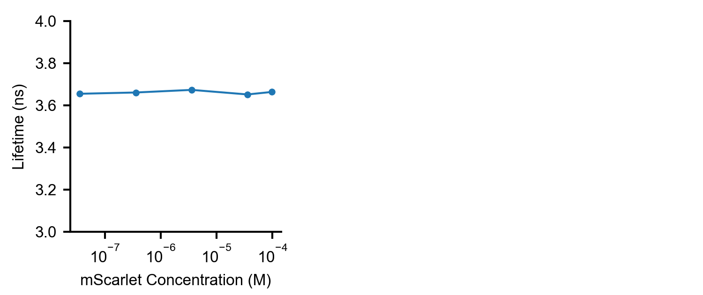
Figure S2. Dependence of mScarlet fluorescence lifetime on mScarlet concentration.
No change in fluorescence lifetime (mean arrival time) was observed in PBS at pH 7.4 as mScarlet concentration varied from 0.001 mg/mL to 2.7 mg/mL (3.7e-5 M to 1e-4 M).
Figure S3. Dependence of mScarlet fluorescence lifetime on concentrations of common ions
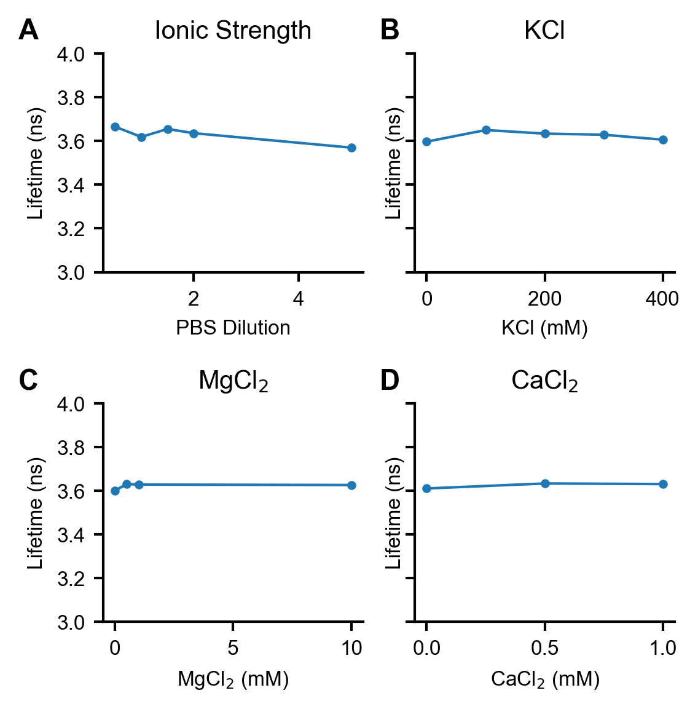
Figure S3. Dependence of mScarlet fluorescence lifetime on concentrations of common ions. (A) Slight dependence of mScarlet lifetime on ionic strength and PBS concentration.
(B) mScarlet lifetime does not depend on KCl concentration. KCl concentration measurements were performed in 1x PBS (in addition to the listed KCl concentration) to maintain consistent pH.
(C) mScarlet lifetime does not depend on MgCl2 concentration. MgCl2 concentration measurements were performed in 1x PBS (in addition to the listed MgCl2 concentration) to maintain consistent pH.
(D) mScarlet lifetime does not depend on CaCl2 concentration. CaCl2 concentration measurements were performed in 50 mM Tris pH 8 to maintain consistent pH. All measurements were taken with 0.01 mg/mL 6xHis-mScarlet.
Figure S4. mScarlet response to pH at different temperatures
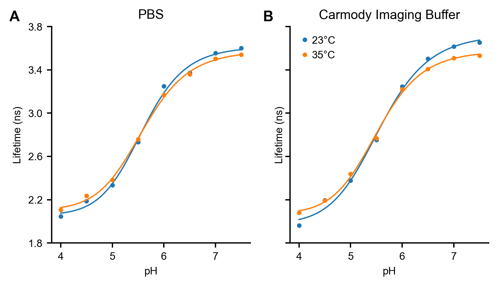
Figure S4. mScarlet response to pH at different temperatures.
Effect of temperature on the pH response of 0.01 mg/mL mScarlet in
(A) PBS and
(B) Carmody Imaging Buffer, which is primarily KCl (see Methods). The lifetime response to pH does not depend strongly on either temperature or ionic composition. Each point indicates the average of two measurements taken on separate days; measurements were generally quite similar. Line indicates the fit to a 4 parameter logistic model; fit parameters are tabulated in Table S1.
Figure S5. Dependence of mScarlet fluorescence lifetime on glycerol concentration
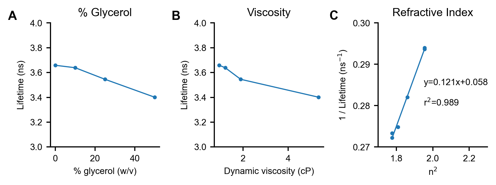
Figure S5. Dependence of mScarlet fluorescence lifetime on glycerol concentration. (A) mScarlet lifetime decreases as glycerol percentage increases. mScarlet (0.01 mg/mL) was mixed with glycerol at varying percentages in 50 mM sodium phosphate, pH 8. Solution pH was set after glycerol addition to ensure consistency.
(B) Re-plotting of the lifetime data in (A) vs. the calculated dynamic viscosity
[Volk 2018]
for that glycerol-water mixture at the appropriate temperature.
(C) Re-plotting of the lifetime data in (A) vs. the published refractive index
[Hoyt 1934]
squared (n2). A linear relationship is observed, as predicted by the Strickler-Berg equation
[Strickler 1962].
A line of best fit, along with parameters describing that line, is displayed on the plot.
Figure S6. Strong Colocalization between SiR Lysosome and mScarlet-LAMP1
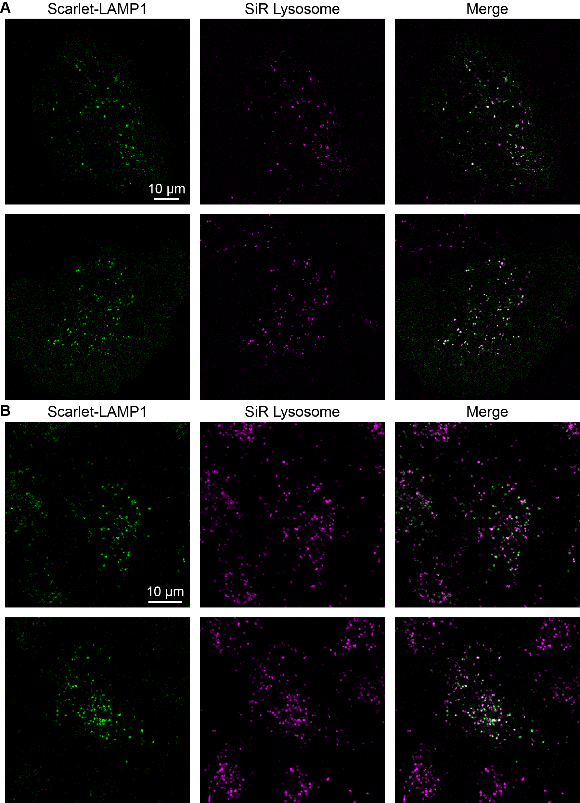
Figure S6. Strong Colocalization between SiR Lysosome and mScarlet-LAMP1 (A) U2OS cells transiently transfected with the mScarlet-LAMP1 reporter and stained with SiR Lysosome.
(B) A549 polyclonal cell line expressing mScarlet-LAMP1 reporter and stained with SiR Lysosome. Note that the mScarlet-LAMP1 reporter is more strongly expressed in some cells than others in this polyclonal line, and it shows only very weak fluorescence intensity in some cells. In cells where both labels show strong intensities, the two fluorescence channels reveal the same structures, although the fluorescence intensities of the two lysosomal stains do not appear correlated at the individual lysosome level.
Figure S7. Loss of one-to-one stoichiometry in the two-color pHlys reporter pHLARE.
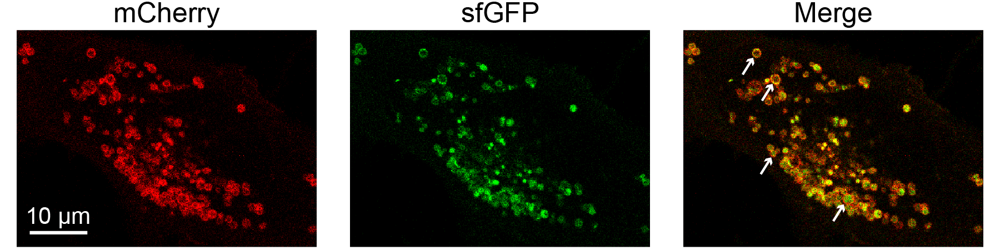
Figure S7. Loss of one-to-one stoichiometry in the two-color pHlys reporter pHLARE.
U2OS cells were transiently transfected with the pHlys reporter pHLARE8 and treated with 100 nM BafA for 5 hours. Point-scanning confocal micrographs of the mCherry and sfGFP channels reveal a range of costaining patterns for the two fluorescent proteins in pHLARE. While the mCherry signal generally appears as a hollow outline (cytosolic side of lysosomal membrane), the sfGFP signal (lumenal side of lysosomal membrane) appears as a filled circle in some lysosomes and a hollow circle in others. In the filled circles, sfGFP signal in the center of the lysosome appears far away from the mCherry stain, likely representing cleavage of the sfGFP from LAMP1 by lysosomal proteases. White arrows indicate clear examples of the various co-staining patterns (top two arrows, hollow; bottom two arrows, filled).
Figure S8. pH Sensitivity of the mScarlet-LAMP1 reporter in A549 cells.
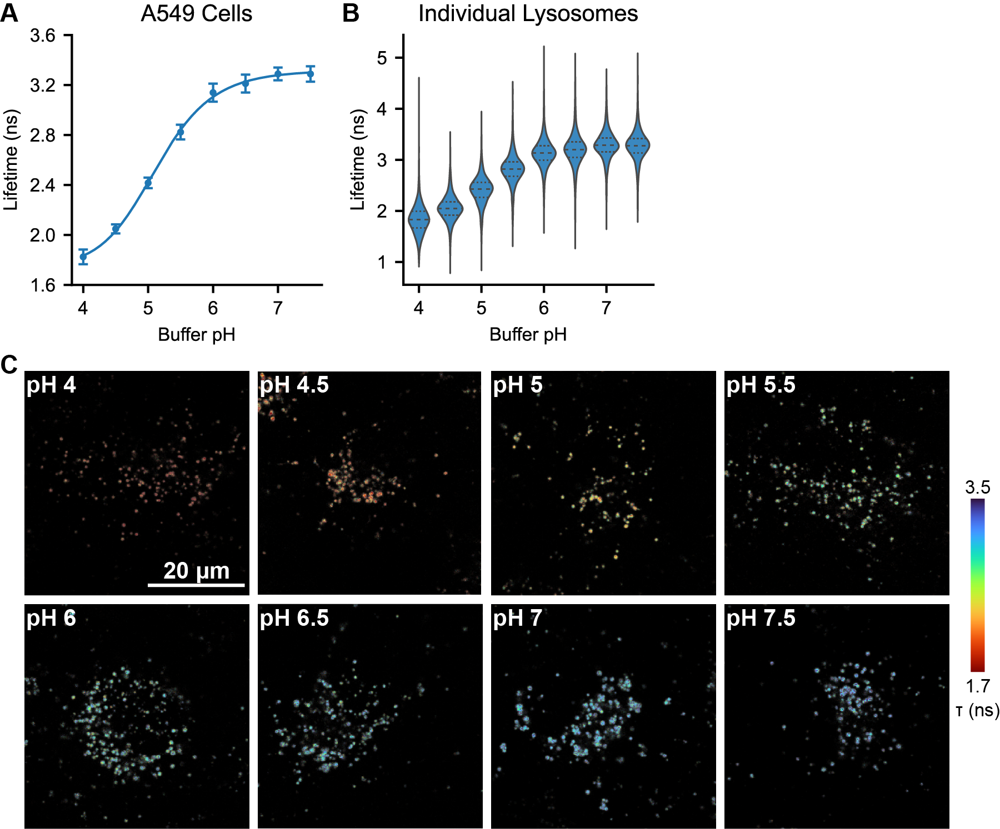
Figure S8. pH Sensitivity of the mScarlet-LAMP1 reporter in A549 cells.
Measurements were performed in a polyclonal mScarlet-LAMP1 reporter cell line derived from the A549 parent cell line.
(A) Average lifetime recorded at each pH, where pHlys was set by incubation with 10 μM nigericin and 2 μM monensin. Each point is the mean ± SD of the average lysosomal lifetime from 15 images. Solid line indicates a 4 parameter logistic fit to the data; model parameters are listed in Table S1.
(B) Violin plots showing the per-lysosome quantification of the data from (A). Inner lines indicate median and first/third quartiles of the dataset (N=1384-2479 segmented lysosomal regions from 15 images per pH).
(C) Representative lifetime-intensity overlay images of A549 cells with pHlys set to the indicated value using nigericin and monensin.
Figure S9. Additional representative images of pHlys in control and BafA treated cells.
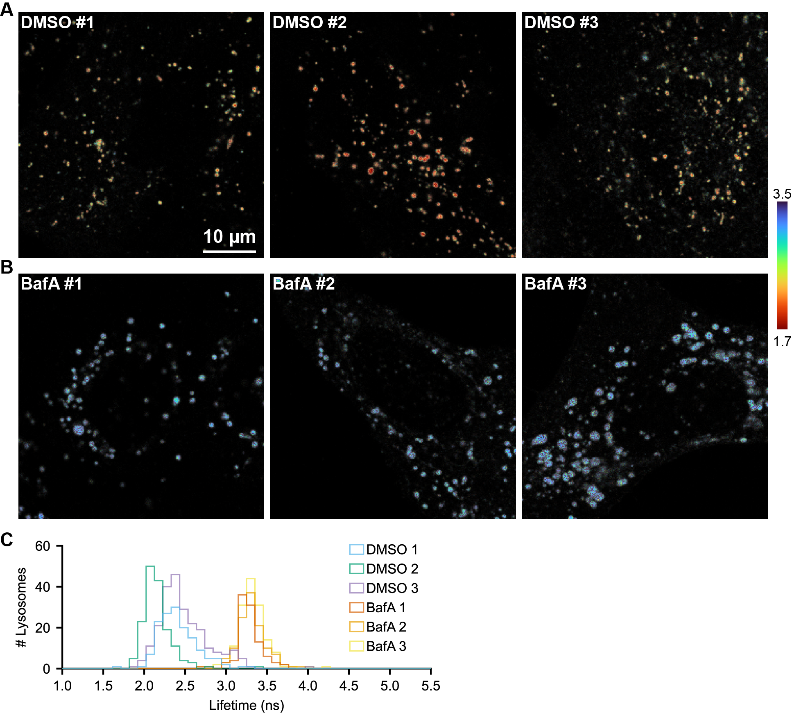
Figure S9. Additional representative images of pHlys in control and BafA treated cells.
Lifetime-intensity overlay images of U2OS cells incubated for 5 hours in complete media containing (A) 0.1% DMSO (vehicle control) or (B) 100 nM BafA (bafilomycin A1).
(C) Histograms quantifying pHlys on a per-lysosome basis in the above images. Lysosome regions smaller than 2 pixels in area were omitted.
Figure S10. Effects of bafilomycin A1 treatment on pHlys quantified at the whole cell level
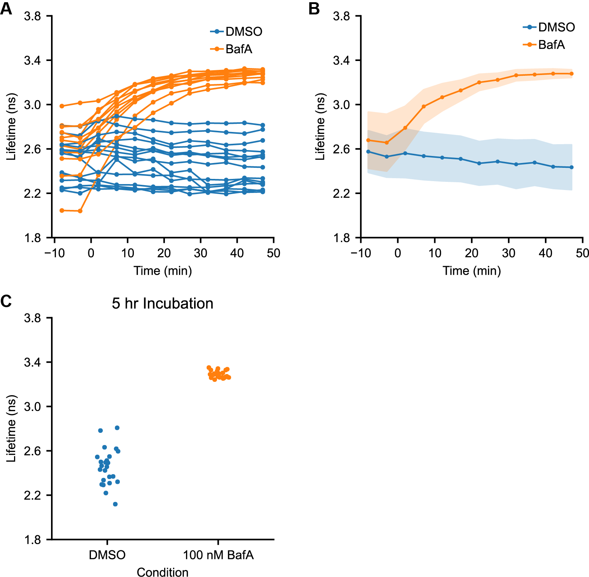
Figure S10. Effects of bafilomycin A1 treatment on pHlys quantified at the whole cell level. (A) Time course of pHlys change in response to DMSO or bafA addition (0.1% or 100 nM respectively, added at time=0), as measured by mScarlet lifetime. Each trace is the average lifetime for all lysosomes in a given cell (same dataset as Figure 3).
(B) Aggregated response to DMSO or bafA addition across all recordings (same data as in (A), DMSO n=15, BafA n=11). Solid points indicate median and shaded area indicates \(\pm\)1 standard deviation.
(C) Average lifetime by cell for cells treated with 0.1% DMSO or 100 nM BafA for 5-6 hours (same dataset as Figure 2C). Each point represents 1 cell (DMSO n=24, BafA n=22).
Figure S11. Spatial distribution of pHlys in control and BafA treated cells.
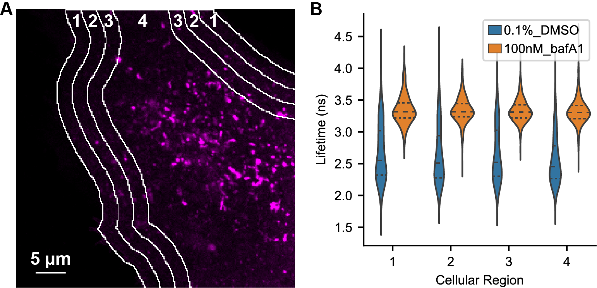
Figure S11. Spatial distribution of pHlys in control and BafA treated cells. (A) Fluorescence intensity (photon count) image of a U2OS cell expressing mScarlet-LAMP1, along with a depiction of cellular regions evaluated for spatial differences (white lines and numbers). 5 μm slices were taken from the cell periphery moving inward as described previously
[Johnson 2016].
Lysosomal ROIs located on a region border were assigned to the region in which the center of the ROI was located.
(B) Distribution of mScarlet lifetimes measured in each region in cells treated with 0.1% DMSO or 100 nM BafA for 5-6 hours. Analysis was done on the same dataset from Figure 2C (DMSO n=24, BafA n=22 cells). Number of lysosomal ROIs identified in each condition (in ascending order by zone) are as follows: DMSO 411, 458, 536, 2454; BafA 274, 365, 439, 2325.
Figure S12. Images of pHlys recordings from U2OS cells in different media conditions
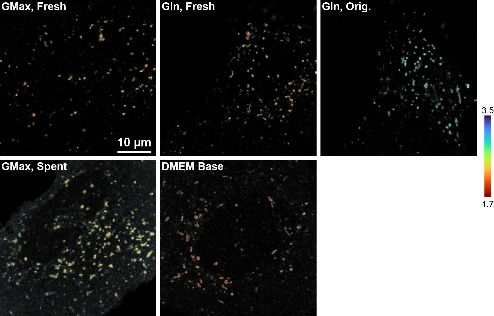
Figure S12. Images of pHlys recordings from U2OS cells in different media conditions.
Images are lifetime-intensity overlays; underlying intensity is scaled to the range of each image individually (i.e. intensity is not comparable across images). U2OS cells were transiently transfected with mScarlet-LAMP1 and grown in complete DMEM (4.5 g/L glucose, 10% FBS, 1 mM pyruvate, 1% pen-strep) with 2 mM GlutaMAX. 5-10 minutes before image acquisition, growth media was exchanged for the indicated solution. GMax, Fresh: fresh complete growth media with 2 mM GlutaMAX; Gln, Fresh: complete growth media with 4 mM glutamine added the day of the experiment; Gln, Orig.: complete growth media containing 4 mM glutamine added by the manufacturer; GMax, spent: no media change (kept same complete growth media); DMEM base: DMEM with 4.5 g/L glucose only. Note that substantial cell-to-cell heterogeneity was present in these conditions, so these images should not be interpreted as representative of all cells.
Figure S13. Additional representative images of pHlys response to BafA over time
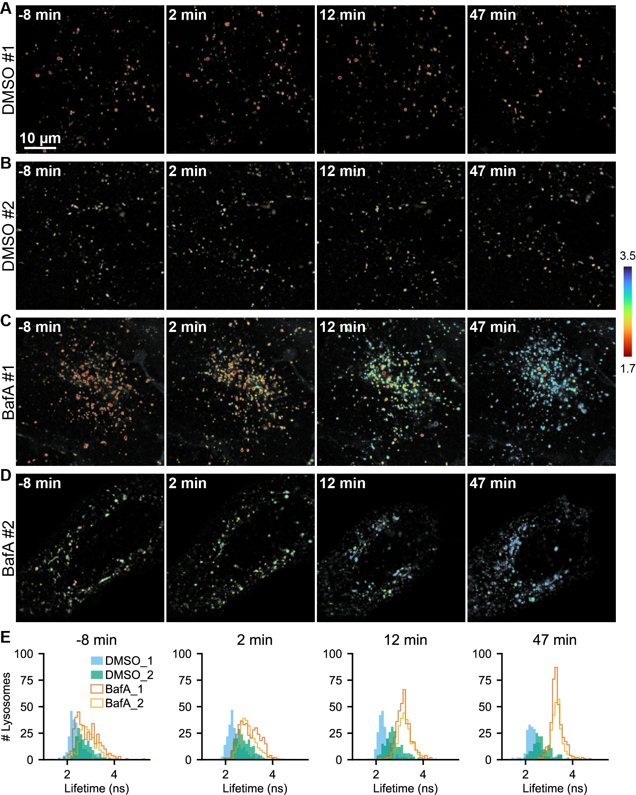
Figure S13. Additional representative images of pHlys response to BafA over time.
Lifetime-intensity overlay images of U2OS cells expressing mScarlet-LAMP1 and treated with 0.1% DMSO (A, B) or 100 nM BafA (C, D) at time 0. (E) Histograms of mScarlet-LAMP1 lifetime measured at the individual lysosome level at each time point. In BafA treated cells, an initial broadening of the distribution followed by a contraction of the distribution can be observed. In DMSO treated cells, minimal change is observed. Adjacent or overlapping lysosomes were treated as a unit, and lysosomal regions smaller than 2 pixels were omitted.
Supplementary Tables
Table S1. Fit parameters for a four parameter logistic function to describe mScarlet lifetime response to pH. Parameters are shown as the value ± standard deviation (SD) from the fit. Please note that the SD reported here is the fitting error alone and does not include variability introduced by the experiment itself.
Condition
Temp (°C)
Construct
pKa
Slope Factor
Min. τ (ns)
Max. τ (ns)
PBS
23
6xHis-mScarlet
5.58 ± 0.06
13 ± 2
2.06 ± 0.06
3.62 ± 0.06
PBS
35
6xHis-mScarlet
5.59 ± 0.04
12 ± 1
2.11 ± 0.03
3.58 ± 0.03
Carmody's Imaging Buffer
23
6xHis-mScarlet
5.56 ± 0.07
12 ± 2
1.98 ± 0.07
3.72 ± 0.07
Carmody's Imaging Buffer
35
6xHis-mScarlet
5.51 ± 0.04
13 ± 1
2.08 ± 0.04
3.58 ± 0.03
U2OS Lysosomes
35
mScarlet-LAMP1
4.90 ± 0.05
13 ± 1
1.72 ± 0.07
3.25 ± 0.02
A549 Lysosomes
35
mScarlet-LAMP1
5.13 ± 0.03
11.7 ± 0.9
1.75 ± 0.04
3.31 ± 0.02
Characterization of purity of 6xHis-mScarlet preparation
6xHis-mScarlet was purified as described in the Methods. Below, SDS-Page of purified mScarlet protein, showing a major band at 28 kDa, along with fragments at 19 kDa and 9 kDa indicating cleavage of the backbone under reducing conditions (see Methods). Protein was 99.5% pure by UV in analytical high performance liquid chromatography size exclusion chromatography (HPLC-SEC).
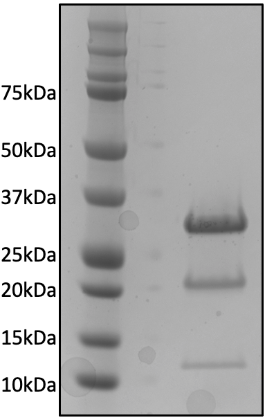
Amino Acid and DNA sequences of mScarlet constructs
6xHis-mScarlet Amino Acid Sequence (for characterization of pure protein)